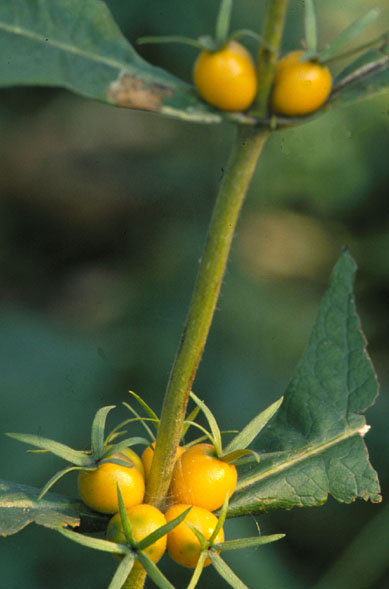
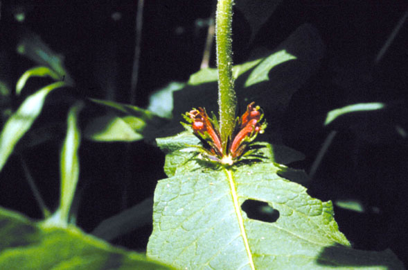

Triosteum perfoliatum
Family: Caprifoliaceae
Late Horse Gentian / Wild Coffee
Swink/Wilhelm #4

FLOWERING: May - Early June
SEED TIMING: Mid-October through November
HABITAT: Open woodlands and edges
DIAGNOSTIC FEATURES: 2 - 4 feet high. A coarse plant with large, paired leaves surrounding stem. Small nests of maroon flowers at the leaf axils, followed by clusters of orange berries.
TO PICK: Fruit looks like a mini-orange tomato, is hairy, and contains 3 nutlets. Will come off easily when ripe.